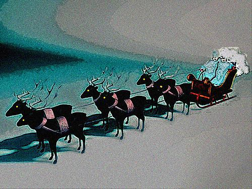
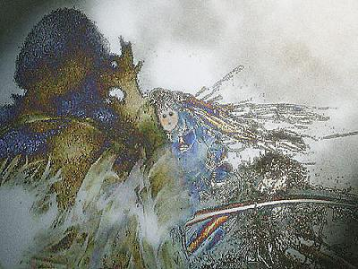
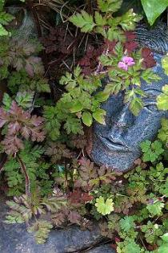
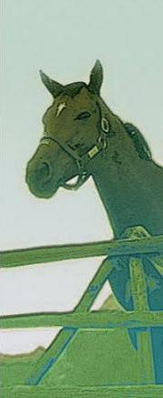

Poems
by Alison Brackenbury
The nine poems on this page are all unpublished to date.
At the Ice Hotel
My head tilts to the Arctic moon
Slender in its sky.
My daughter will ride soon
On a reindeer sledge, to marry.
I do not see the white buck rear
While she laughs, shrieking, swept past fear.
Moon swells. I watch the reindeer stand
Poised on its snow-splayed feet,
Its lip flapped on its handler’s sleeve.
Sky soars, so far from heat
As the priest ducks the hide-hung door
The air’s frost rimes her rough fair hair.
But how she sings, wrapped in grey wool,
Of fire and ice, North’s spring,
While fingers clench against blue chill
In reindeer skins’ rough settling.
The young man fumbles white gold’s flash,
My daughter laughs.The young priest laughs,
By walls of ice, with breath of glass.
Then they are gone, clung to the sledge
Tied with one loop of string.
Next week I may walk heated winds,
Sun like the deer’s eye widening,
But wish no better future soon
Than Northern light, this Arctic moon.

Thermal
Sulis Minerva, they found your stone head
In Bath, where my daughter drove me today,
Half-Roman, half-Celt. Do not lecture. Instead
We wade through blue pools from the sulphurous spring
In a bubble of freedom, my fifty-fourth birthday,
In rooftop baths, by the gulls’ wavering.
How hard she works, my dark Grecian daughter,
Hands clenched on the wheel, quick glint of her rings,
Marriage, new job. How heavily water
Oiled by the sulphur, smoothes each winter limb.
Roman pipes pump to a Celtic languor.
By rose-red chimneys, I rise and swim.
Sulis Minerva, they took both your names
Into the dark which I fear will come back.
When you rose into daylight, girls’ eyes shone the same
With shivering shoulders which longed for the south.
With rough hair of weed, eyes sunken and black,
Water, not word, wash us warm through your mouth.

Your signature is required
Oh reading wills I mourn them:
my father’s upright hand,
careful from the village school.
So his father wrote, his mother
shaped child’s letters, crimped like pastry,
pinched, like the cowslip’s petal.
Who will write like that again?
And then, her zeros,
more trouble than a pleasure,
lawyer’s chill trick, a second will,
the day my mother slept.
But the tax is saved. I sign
in my slanted dashing hand.
I walk the broad path, common,
to the hill we do not own.
The bramble’s flowers raise storms,
palest golds, rough creams and browns,
the gatekeepers, the butterflies
of hottest harsh July.
So I know that they are safe,
so, forgetting them, I pass
a C of moon so tender
she must not be glimpsed through glass.
The Book of Weeds
It is like your fierce love (I am lazy)
to yearn to name each weed. You could
go crazy
Naming. Aren’t the named enough? Sow thistle
bleeds white, cinquefoil swarms yellow stars.
I whistle
As horsetails old as birds cut through my hand,
bindweed chokes roses. The nameless?
I have planned
For all good souls, a Book of Weeds, to take
the purple spires from shifted soil,
sour ache
Of crushed leaves with their briefest rosy flower,
onion-scented stems, whose bells drop
in an hour.
No, close the book. Fling down your trowel and knife.
All weeds grow one name only.
It is life.
Carving
A man is writing about sharpening knives.
He is told: the down stroke makes a burr,
The up stroke takes it off.
He does not understand.
I am properly scornful, for I know of burrs,
I have sucked them from my fingers. But I cannot sharpen knives.
My grandfather flew them, whistling with the blade.
Voices have burrs,
I hear her live on air.
She was my friend, for years, a stranger.
How her voice slows and slurs and hooks my heart.
Redemption
Yes, the Prince will come; but not to marry,
Will, like an angel, wave the prison keys,
Sweep up on horseback just as the deserter
Faces the lifted guns. Songs tell us these
Most hopeful ends. We dream of the Good Ruler;
Justice, not love, is the last dream we carry.
The songs were lies. The Prince has gouty feet,
He stays indoors. What we want, we must do,
Though it will cost us love and all sound sleeps:
Print leaflets until dawn, phone vain men, go
To meetings, marches, grim, unled. So we
Shall win; and shall be spat at in the streets.
Poetics
Aristotle, who once taught a boy
Who would waste many cities
Came late to poetry’s burnt Troy.
Alexander drilled crack troops. O see
That epic, flute, share one clear goal:
They imitate reality.
Reversals which unloose the knot
Are good. The trumpet sounds. The weak
May yet succeed, with a strong plot.
No army ever marched so far.
It helps a writer to be mad.
But then we have hamartia,
The choice, the faults which will lead up
To all that follows. Hush the drum.
What slides in Alexander’s cup?
Guilt purges, Christians thought. But fact
Will do, the Greeks wrote, one clear act.
Drama’s what’s done, the old man cried.
Lips cracked to black, the young King died.
At Eight
The kittens are out! They are dizzy with sky.
Pavements, wet drives, neighbours’ smooth grass
Melt to their paws, twin racehorses
In Saturday’s calm, before shopping or cars.
They twist, they fly, swim sun and I
Trespass, stumble, flag down first cars.
Snatch one, the quick tabby! Scoop her up. Look,
Here is the back grass, sheltered and safe,
Stay here. (She wriggles.) The squirrel! Look.
Across the dazzle, great glistening eyes
Meet, before years of ambush: lock.
Now she is off, to the shadow of wings,
The ringdove, the robin, the delicate wren,
Dead nettle stalks, ivy, steep railway banks.
Roused from warm screens by their skiddings and squeak,
My neighbour’s frail son tugs the curtain back, looks:
The kittens are out. It is Christmas week.
Rosie
You block the slope, chestnut and truculent.
When you came, a gangling two year old,
you spotted me at once.
My muddy coat was rich with mints;
heart, with foolish love of horses.
My own horse hated you,
since you were turned out with the foal,
her foster-child. You were her distant cousin.
At twenty-two, she spotted her young rival,
without her fine socks; with a pale blonde mane
which, grazing, combed moon daisies, effortless.
How the old hate the young. How the young pine.
Once you pawed the wire fence, hooked your front shoe,
yet hurtled over, unhurt, my true cob.
I should have bobbed through April’s woods on you,
have bolted in the blurring stubble field,
sweated, cursed, forgot. Horses are love,
but love is for the young and I am old
the right hip’s stabbing held at bay by pills
the ruined shoulder subtle as a bruise.
My old mare, curled beside the water trough,
sleeps, like a warm dog. How did you make
scuffs on your polished forehead? Still half-broken,
you have been advertised. You are for sale.
This is your chance.
We smell the mints’ perfume
blow from my pocket. The tiny crescent moon
rides on your shoulder. The deer stir in the woods,
the swifts surge higher. But I take my course
down the rough grasses, in the heat’s last haze.
You are not my horse.
|